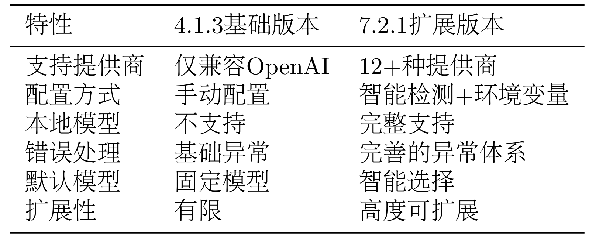
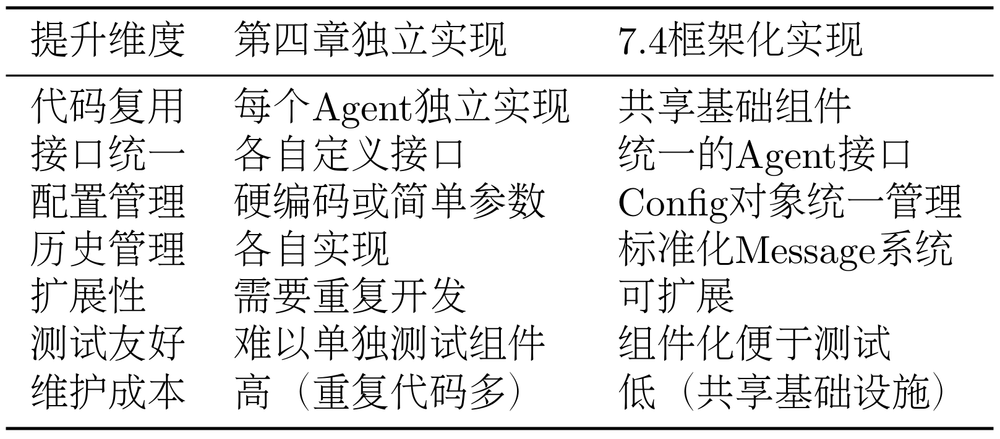
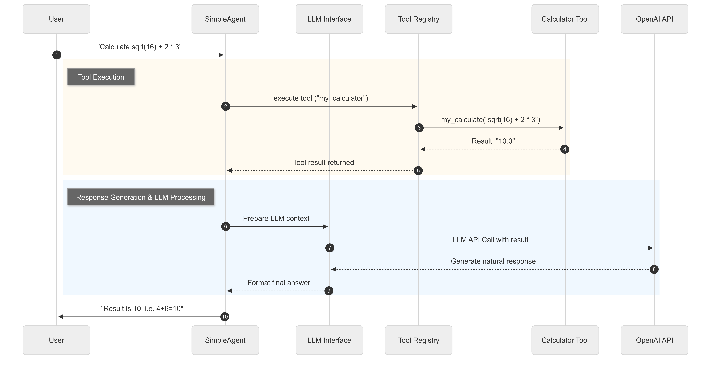

Chapter 7 Building Your Agent Framework¶
In the previous chapters, we explained the fundamentals of agents and experienced the development convenience brought by mainstream frameworks. Starting from this chapter, we will enter a more challenging and valuable stage: building an agent framework from scratch—HelloAgents.
To ensure the continuity and reproducibility of the learning process, HelloAgents will advance development through version iterations. Each chapter will add new functional modules based on the previous chapter and integrate and implement agent-related knowledge points. Ultimately, we will use this self-built framework to efficiently implement the advanced application cases in the subsequent chapters of this book.
7.1 Overall Framework Architecture Design¶
7.1.1 Why Build Your Own Agent Framework¶
In today's rapidly developing agent technology landscape, there are already many mature Agent frameworks on the market. So why do we still need to build a new framework from scratch?
(1) Rapid Iteration and Limitations of Market Frameworks
The agent field is a rapidly developing area where new concepts emerge constantly. Each framework has its own positioning and understanding of agent design, but the core knowledge points of agents are consistent.
- Complexity of Over-abstraction: Many frameworks introduce numerous abstraction layers and configuration options in pursuit of generality. Taking LangChain as an example, although its chain invocation mechanism is flexible, it has a steep learning curve for beginners, often requiring understanding of many concepts to complete simple tasks.
- Instability from Rapid Iteration: Commercial frameworks frequently change API interfaces to capture market share. Developers often face the frustration of code not running after version upgrades, with maintenance costs remaining high.
- Black-box Implementation Logic: Many frameworks encapsulate core logic too tightly, making it difficult for developers to understand the internal working mechanisms of Agents and lacking deep customization capabilities. When encountering problems, they can only rely on documentation and community support, especially if the community is not active enough, feedback may take a very long time without anyone pushing it forward, affecting subsequent development efficiency.
- Complexity of Dependencies: Mature frameworks often carry a large number of dependency packages, with large installation package sizes, which may cause dependency conflict problems when needing to cooperate with other project code.
(2) Capability Leap from User to Builder
Building your own Agent framework is actually a process of transforming from a "user" to a "builder." The value brought by this transformation is long-term.
- Deep Understanding of Agent Working Principles: By implementing each component hands-on, developers can truly understand the Agent's thinking process, tool invocation mechanisms, and the pros and cons and differences of various design patterns.
- Gaining Complete Control: A self-built framework means complete control over every line of code, allowing precise tuning according to specific needs without being constrained by third-party framework design philosophies.
- Cultivating System Design Capabilities: The framework construction process involves core software engineering skills such as modular design, interface abstraction, and error handling, which are of significant value to developers' long-term growth.
(3) Necessity of Customization Needs and Deep Mastery
In practical applications, the needs for agents vary greatly across different scenarios, often requiring secondary development based on general frameworks.
- Optimization Needs for Specific Domains: Vertical domains such as finance, healthcare, and education often require targeted prompt templates, special tool integration, and customized security strategies.
- Precise Control of Performance and Resources: In production environments, there are strict requirements for response time, memory usage, and concurrent processing capabilities. The "one-size-fits-all" solutions of general frameworks often cannot meet refined needs.
- Transparency Requirements for Learning and Teaching: In our teaching scenario, learners expect to clearly see every step of the agent construction process and understand the working mechanisms of different paradigms, which requires the framework to have high observability and interpretability.
7.1.2 Design Philosophy of HelloAgents Framework¶
Building a new Agent framework is not about the number of features but whether the design philosophy can truly solve the pain points of existing frameworks. The design of the HelloAgents framework revolves around a core question: How can learners both get started quickly and deeply understand the working principles of Agents?
When you first encounter any mature framework, you may be attracted by its rich features, but you will soon discover a problem: to complete a simple task, you often need to understand more than a dozen different concepts such as Chain, Agent, Tool, Memory, Retriever, etc. Each concept has its own abstraction layer, making the learning curve extremely steep. Although this complexity brings powerful functionality, it also becomes an obstacle for beginners. The HelloAgents framework attempts to find a balance between functional completeness and learning friendliness, forming four core design philosophies.
(1) Balance Between Lightweight and Teaching-Friendly
An excellent learning framework should have complete readability. HelloAgents separates core code by chapters, based on a simple principle: any developer with a certain programming foundation should be able to fully understand the framework's working principles within a reasonable time. In dependency management, the framework adopts a minimalist strategy. Except for OpenAI's official SDK and a few necessary basic libraries, no heavy dependencies are introduced. When encountering problems, we can directly locate the framework's own code without searching for answers in complex dependency relationships.
(2) Pragmatic Choice Based on Standard APIs
OpenAI's API has become an industry standard, and almost all mainstream LLM providers are working hard to be compatible with this interface. HelloAgents chooses to build on this standard rather than reinventing an abstract interface. This decision is mainly motivated by several points. First is the guarantee of compatibility. After mastering the use of HelloAgents, when migrating to other frameworks or integrating it into existing projects, the underlying API invocation logic is completely consistent. Second is the reduction of learning costs. You don't need to learn new conceptual models because all operations are based on standard interfaces you are already familiar with.
(3) Careful Design of Progressive Learning Path
HelloAgents provides a clear learning path. We will save the learning code for each chapter as a historical version that can be downloaded via pip, so there is no need to worry about the cost of using the code, because every core function will be written by yourself. This design allows you to move forward according to your own needs and pace. Each upgrade is natural, without conceptual jumps or understanding gaps. It's worth mentioning that the content of this chapter is also based on the content of the previous six chapters. Similarly, this chapter also lays the framework foundation for subsequent advanced knowledge learning.
(4) Unified "Tool" Abstraction: Everything is a Tool
To thoroughly implement the lightweight and teaching-friendly philosophy, HelloAgents made a key simplification in architecture: except for the core Agent class, everything is Tools. Memory, RAG (Retrieval-Augmented Generation), RL (Reinforcement Learning), MCP (Protocol), and other modules that need to be learned independently in many other frameworks are all uniformly abstracted as a "tool" in HelloAgents. The original intention of this design is to eliminate unnecessary abstraction layers, allowing learners to return to the most intuitive core logic of "agents calling tools," thereby truly achieving the unity of quick start and deep understanding.
7.1.3 Learning Objectives of This Chapter¶
Let's first look at the core learning content of Chapter 7:
hello-agents/
├── hello_agents/
│ │
│ ├── core/ # Core framework layer
│ │ ├── agent.py # Agent base class
│ │ ├── llm.py # HelloAgentsLLM unified interface
│ │ ├── message.py # Message system
│ │ ├── config.py # Configuration management
│ │ └── exceptions.py # Exception system
│ │
│ ├── agents/ # Agent implementation layer
│ │ ├── simple_agent.py # SimpleAgent implementation
│ │ ├── react_agent.py # ReActAgent implementation
│ │ ├── reflection_agent.py # ReflectionAgent implementation
│ │ └── plan_solve_agent.py # PlanAndSolveAgent implementation
│ │
│ ├── tools/ # Tool system layer
│ │ ├── base.py # Tool base class
│ │ ├── registry.py # Tool registration mechanism
│ │ ├── chain.py # Tool chain management system
│ │ ├── async_executor.py # Asynchronous tool executor
│ │ └── builtin/ # Built-in tool set
│ │ ├── calculator.py # Calculator tool
│ │ └── search.py # Search tool
└──
Before starting to write specific code, we need to first establish a clear architectural blueprint. The architectural design of HelloAgents follows the core principles of "layered decoupling, single responsibility, unified interface," which maintains code organization and facilitates content expansion by chapters.
Quick Start: Installing HelloAgents Framework
To allow readers to quickly experience the complete functionality of this chapter, we provide a directly installable Python package. You can install the version corresponding to this chapter with the following command:
# hello-agents framework code visible link: https://github.com/jjyaoao/helloagents
# Python version needs to be >= 3.10
pip install "hello-agents==0.1.1"
Learning this chapter can be done in two ways:
- Experiential Learning: Directly install the framework using
pip, run example code, and quickly experience various functions - Deep Learning: Follow the content of this chapter, implement each component from scratch, and deeply understand the framework's design ideas and implementation details
We recommend adopting the "experience first, then implement" learning path. In this chapter, we provide complete test files. You can rewrite core functions and run tests to verify whether your implementation is correct. This learning method ensures both practicality and learning effectiveness. If you want to deeply understand the framework's implementation details or wish to participate in the framework's development, you can visit this GitHub repository.
Before starting, let's experience building a simple agent using Hello-agents in 30 seconds!
# Configure the LLM API in the .env file in the same-level folder. You can refer to the .env.example in the code folder, or reuse the .env file from previous chapter cases.
from hello_agents import SimpleAgent, HelloAgentsLLM
from dotenv import load_dotenv
# Load environment variables
load_dotenv()
# Create LLM instance - framework automatically detects provider
llm = HelloAgentsLLM()
# Or manually specify provider (optional)
# llm = HelloAgentsLLM(provider="modelscope")
# Create SimpleAgent
agent = SimpleAgent(
name="AI Assistant",
llm=llm,
system_prompt="You are a helpful AI assistant"
)
# Basic conversation
response = agent.run("Hello! Please introduce yourself")
print(response)
# Add tool functionality (optional)
from hello_agents.tools import CalculatorTool
calculator = CalculatorTool()
# Need to implement MySimpleAgent in 7.4.1 for invocation, subsequent chapters will support this invocation method
# agent.add_tool(calculator)
# Now you can use tools
response = agent.run("Please help me calculate 2 + 3 * 4")
print(response)
# View conversation history
print(f"Number of historical messages: {len(agent.get_history())}")
7.2 HelloAgentsLLM Extension¶
The content of this section will be an iterative upgrade based on the HelloAgentsLLM created in Section 4.1.3. We will transform this basic client into a more adaptive model invocation hub. This upgrade mainly revolves around the following three goals:
- Multi-provider Support: Achieve seamless switching between various mainstream LLM service providers such as OpenAI, ModelScope, Zhipu AI, etc., avoiding framework binding to specific vendors.
- Local Model Integration: Introduce VLLM and Ollama, two high-performance local deployment solutions, as production-grade supplements to the Hugging Face Transformers solution in Section 3.2.3, meeting the needs of data privacy and cost control.
- Automatic Detection Mechanism: Establish an automatic recognition mechanism that enables the framework to intelligently infer the type of LLM service used based on environment information, simplifying the user's configuration process.
7.2.1 Supporting Multiple Providers¶
The HelloAgentsLLM class we previously defined can already connect to any service compatible with the OpenAI interface through the two core parameters api_key and base_url. This theoretically guarantees universality, but in practical applications, different service providers have differences in environment variable naming, default API addresses, and recommended models. If users need to manually query and modify code every time they switch service providers, it will greatly affect development efficiency. To solve this problem, we introduce provider. The improvement idea is: let HelloAgentsLLM handle the configuration details of different service providers internally, thereby providing users with a unified and concise invocation experience. We will elaborate on the specific implementation details in Section 7.2.3 "Automatic Detection Mechanism." Here, we first focus on how to use this mechanism to extend the framework.
Below, we will demonstrate how to add support for the ModelScope platform by inheriting HelloAgentsLLM. We hope readers will not only learn how to "use" the framework but also master how to "extend" it. Directly modifying the source code of installed libraries is not a recommended practice because it makes subsequent library upgrades difficult.
(1) Create Custom LLM Class and Inherit
Suppose we have a my_llm.py file in our project directory. We first import the HelloAgentsLLM base class from the hello_agents library, then create a new class named MyLLM that inherits from it.
# my_llm.py
import os
from typing import Optional
from openai import OpenAI
from hello_agents import HelloAgentsLLM
class MyLLM(HelloAgentsLLM):
"""
A custom LLM client that adds support for ModelScope through inheritance.
"""
pass # Leave empty for now
(2) Override __init__ Method to Support New Provider
Next, we override the __init__ method in the MyLLM class. Our goal is: when the user passes provider="modelscope", execute our custom logic; otherwise, call the original logic of the parent class HelloAgentsLLM, enabling it to continue supporting other built-in providers like OpenAI.
class MyLLM(HelloAgentsLLM):
def __init__(
self,
model: Optional[str] = None,
api_key: Optional[str] = None,
base_url: Optional[str] = None,
provider: Optional[str] = "auto",
**kwargs
):
# Check if provider is 'modelscope' that we want to handle
if provider == "modelscope":
print("Using custom ModelScope Provider")
self.provider = "modelscope"
# Parse ModelScope credentials
self.api_key = api_key or os.getenv("MODELSCOPE_API_KEY")
self.base_url = base_url or "https://api-inference.modelscope.cn/v1/"
# Validate credentials exist
if not self.api_key:
raise ValueError("ModelScope API key not found. Please set MODELSCOPE_API_KEY environment variable.")
# Set default model and other parameters
self.model = model or os.getenv("LLM_MODEL_ID") or "Qwen/Qwen2.5-VL-72B-Instruct"
self.temperature = kwargs.get('temperature', 0.7)
self.max_tokens = kwargs.get('max_tokens')
self.timeout = kwargs.get('timeout', 60)
# Create OpenAI client instance with obtained parameters
self._client = OpenAI(api_key=self.api_key, base_url=self.base_url, timeout=self.timeout)
else:
# If not modelscope, use parent class's original logic to handle
super().__init__(model=model, api_key=api_key, base_url=base_url, provider=provider, **kwargs)
This code demonstrates the idea of "overriding": we intercept the case of provider="modelscope" and handle it specially. For all other cases, we hand it back to the parent class through super().__init__(...), preserving all the original framework functionality.
(3) Using the Custom MyLLM Class
Now, we can use our own MyLLM class in the project's business logic just like using the native HelloAgentsLLM.
First, configure the ModelScope API key in the .env file:
Then, import and use MyLLM in the main program:
# my_main.py
from dotenv import load_dotenv
from my_llm import MyLLM # Note: Import our own class here
# Load environment variables
load_dotenv()
# Instantiate our overridden client and specify provider
llm = MyLLM(provider="modelscope")
# Prepare messages
messages = [{"role": "user", "content": "Hello, please introduce yourself."}]
# Make the call, think and other methods are inherited from parent class, no need to override
response_stream = llm.think(messages)
# Print response
print("ModelScope Response:")
for chunk in response_stream:
# Chunk already printed in my_llm, just pass here
# print(chunk, end="", flush=True)
pass
Through the above steps, we have successfully extended new functionality to the hello-agents library without modifying its source code. This method not only ensures code cleanliness and maintainability but also ensures that our customized functionality will not be lost when upgrading the hello-agents library in the future.
7.2.2 Local Model Invocation¶
In Section 3.2.3, we learned how to use the Hugging Face Transformers library to run open-source models locally. This method is very suitable for introductory learning and functional verification, but its underlying implementation has limited performance when handling high-concurrency requests and is usually not the first choice for production environments.
To achieve high-performance, production-grade model inference services locally, the community has produced excellent tools such as VLLM and Ollama. They significantly improve model throughput and operational efficiency through techniques such as continuous batching and PagedAttention, and encapsulate models as API services compatible with OpenAI standards. This means we can seamlessly integrate them into HelloAgentsLLM.
VLLM
VLLM is a high-performance Python library designed for LLM inference. Through advanced technologies such as PagedAttention, it can achieve throughput several times higher than standard Transformers implementations. Below are the complete steps to deploy a VLLM service locally:
First, you need to install VLLM according to your hardware environment (especially CUDA version). It is recommended to follow its official documentation for installation to avoid version mismatch issues.
After installation, use the following command to start an OpenAI-compatible API service. VLLM will automatically download the specified model weights from Hugging Face Hub (if they don't exist locally). We still use the Qwen1.5-0.5B-Chat model as an example:
# Start VLLM service and load Qwen1.5-0.5B-Chat model
python -m vllm.entrypoints.openai.api_server \
--model Qwen/Qwen1.5-0.5B-Chat \
--host 0.0.0.0 \
--port 8000
After the service starts, it will provide an OpenAI-compatible API at the http://localhost:8000/v1 address.
Ollama
Ollama further simplifies local model management and deployment by encapsulating model download, configuration, and service startup into a single command, making it very suitable for quick start. Visit the Ollama official website to download and install the client for your operating system.
After installation, open the terminal and execute the following command to download and run a model (using Llama 3 as an example). Ollama will automatically handle model download, service encapsulation, and hardware acceleration configuration.
# First run will automatically download the model, subsequent runs will directly start the service
ollama run llama3
When you see the model's interactive prompt in the terminal, it indicates that the service has successfully started in the background. Ollama will expose an OpenAI-compatible API interface at the http://localhost:11434/v1 address by default.
Integrating with HelloAgentsLLM
Since both VLLM and Ollama follow industry-standard APIs, integrating them into HelloAgentsLLM is very simple. We only need to treat them as a new provider when instantiating the client.
For example, connecting to a locally running VLLM service:
llm_client = HelloAgentsLLM(
provider="vllm",
model="Qwen/Qwen1.5-0.5B-Chat", # Must match the model specified when starting the service
base_url="http://localhost:8000/v1",
api_key="vllm" # Local services usually don't need a real API Key, can fill in any non-empty string
)
Or, by setting environment variables and letting the client auto-detect, achieve zero code modification:
# Set in .env file
LLM_BASE_URL="http://localhost:8000/v1"
LLM_API_KEY="vllm"
# Directly instantiate in Python code
llm_client = HelloAgentsLLM() # Will automatically detect as vllm
Similarly, connecting to a local Ollama service is just as simple:
llm_client = HelloAgentsLLM(
provider="ollama",
model="llama3", # Must match the model specified in `ollama run`
base_url="http://localhost:11434/v1",
api_key="ollama" # Local services also don't need a real Key
)
Through this unified design, our agent core code requires no modifications to freely switch between cloud APIs and local models. This provides great flexibility for subsequent application development, deployment, cost control, and data privacy protection.
7.2.3 Automatic Detection Mechanism¶
To minimize the user's configuration burden as much as possible and follow the principle of "convention over configuration," HelloAgentsLLM internally designs two core auxiliary methods: _auto_detect_provider and _resolve_credentials. They work together, with _auto_detect_provider responsible for inferring the service provider based on environment information, while _resolve_credentials completes specific parameter configuration based on the inference result.
The _auto_detect_provider method is responsible for automatically inferring the service provider based on environment information, according to the following priority order:
-
Highest Priority: Check Environment Variables for Specific Service Providers This is the most direct and reliable basis for judgment. The framework will sequentially check whether environment variables such as
MODELSCOPE_API_KEY,OPENAI_API_KEY,ZHIPU_API_KEY, etc. exist. Once any one is found, it will immediately determine the corresponding service provider. -
Second Highest Priority: Determine Based on
base_urlIf the user has not set a specific service provider's key but has set the genericLLM_BASE_URL, the framework will parse this URL instead. -
Domain Matching: Identify cloud service providers by checking whether the URL contains characteristic strings such as
"api-inference.modelscope.cn","api.openai.com", etc. -
Port Matching: Identify local deployment solutions by checking whether the URL contains standard ports for local services such as
:11434(Ollama),:8000(VLLM), etc. -
Auxiliary Judgment: Analyze API Key Format In some cases, if neither of the above two methods can determine, the framework will try to analyze the format of the generic environment variable
LLM_API_KEY. For example, some service providers' API keys have fixed prefixes or unique encoding formats. However, since this method may have ambiguity (e.g., multiple service providers have similar key formats), its priority is lower and is only used as an auxiliary means.
Some key code is as follows:
def _auto_detect_provider(self, api_key: Optional[str], base_url: Optional[str]) -> str:
"""
Automatically detect LLM provider
"""
# 1. Check environment variables for specific providers (highest priority)
if os.getenv("MODELSCOPE_API_KEY"): return "modelscope"
if os.getenv("OPENAI_API_KEY"): return "openai"
if os.getenv("ZHIPU_API_KEY"): return "zhipu"
# ... Other service provider environment variable checks
# Get generic environment variables
actual_api_key = api_key or os.getenv("LLM_API_KEY")
actual_base_url = base_url or os.getenv("LLM_BASE_URL")
# 2. Determine based on base_url
if actual_base_url:
base_url_lower = actual_base_url.lower()
if "api-inference.modelscope.cn" in base_url_lower: return "modelscope"
if "open.bigmodel.cn" in base_url_lower: return "zhipu"
if "localhost" in base_url_lower or "127.0.0.1" in base_url_lower:
if ":11434" in base_url_lower: return "ollama"
if ":8000" in base_url_lower: return "vllm"
return "local" # Other local ports
# 3. Auxiliary judgment based on API key format
if actual_api_key:
if actual_api_key.startswith("ms-"): return "modelscope"
# ... Other key format judgments
# 4. Default return 'auto', use generic configuration
return "auto"
Once the provider is determined (whether user-specified or auto-detected), the _resolve_credentials method takes over to handle the differentiated configuration of service providers. It will actively search for corresponding environment variables based on the value of provider and set default base_url for it. Some key implementations are as follows:
def _resolve_credentials(self, api_key: Optional[str], base_url: Optional[str]) -> tuple[str, str]:
"""Resolve API key and base_url based on provider"""
if self.provider == "openai":
resolved_api_key = api_key or os.getenv("OPENAI_API_KEY") or os.getenv("LLM_API_KEY")
resolved_base_url = base_url or os.getenv("LLM_BASE_URL") or "https://api.openai.com/v1"
return resolved_api_key, resolved_base_url
elif self.provider == "modelscope":
resolved_api_key = api_key or os.getenv("MODELSCOPE_API_KEY") or os.getenv("LLM_API_KEY")
resolved_base_url = base_url or os.getenv("LLM_BASE_URL") or "https://api-inference.modelscope.cn/v1/"
return resolved_api_key, resolved_base_url
# ... Logic for other service providers
Let's experience the convenience brought by automatic detection through a simple example. Suppose a user wants to use the local Ollama service, they only need to configure the .env file as follows:
They don't need to configure LLM_API_KEY at all or specify provider in the code. Then, in Python code, they simply instantiate HelloAgentsLLM:
from dotenv import load_dotenv
from hello_agents import HelloAgentsLLM
load_dotenv()
# No need to pass provider, framework will auto-detect
llm = HelloAgentsLLM()
# Framework internal logs will show provider detected as 'ollama'
# Subsequent invocation methods remain completely unchanged
messages = [{"role": "user", "content": "Hello!"}]
for chunk in llm.think(messages):
print(chunk, end="")
In this process, the _auto_detect_provider method successfully infers the provider as "ollama" by parsing "localhost" and :11434 in LLM_BASE_URL. Subsequently, the _resolve_credentials method sets the correct default parameters for Ollama.
Compared to the basic implementation in Section 4.1.3, the current HelloAgentsLLM has the following significant advantages:
Table 7.1 Comparison of HelloAgentLLM Different Version Features

As shown in Table 7.1 above, this evolution embodies an important principle of framework design: start simple, gradually improve. We enhanced functional completeness while maintaining interface simplicity.
7.3 Framework Interface Implementation¶
In the previous section, we built HelloAgentsLLM, a core component that solves the key problem of communicating with large language models. However, it still needs a series of supporting interfaces and components to handle data flow, manage configuration, handle exceptions, and provide a clear, unified structure for upper-layer application construction. This section will cover the following three core files:
message.py: Defines the unified message format within the framework, ensuring standardization of information transfer between agents and models.config.py: Provides a centralized configuration management solution, making framework behavior easy to adjust and extend.agent.py: Defines the abstract base class (Agent) for all agents, providing a unified interface and specification for implementing different types of agents in the future.
7.3.1 Message Class¶
In the interaction between agents and large language models, conversation history is crucial context. To manage this information in a standardized way, we designed a simple Message class. It will be extended in the subsequent context engineering chapter.
"""Message system"""
from typing import Optional, Dict, Any, Literal
from datetime import datetime
from pydantic import BaseModel
# Define message role type, restricting its values
MessageRole = Literal["user", "assistant", "system", "tool"]
class Message(BaseModel):
"""Message class"""
content: str
role: MessageRole
timestamp: datetime = None
metadata: Optional[Dict[str, Any]] = None
def __init__(self, content: str, role: MessageRole, **kwargs):
super().__init__(
content=content,
role=role,
timestamp=kwargs.get('timestamp', datetime.now()),
metadata=kwargs.get('metadata', {})
)
def to_dict(self) -> Dict[str, Any]:
"""Convert to dictionary format (OpenAI API format)"""
return {
"role": self.role,
"content": self.content
}
def __str__(self) -> str:
return f"[{self.role}] {self.content}"
The design of this class has several key points. First, we strictly limit the values of the role field to four types: "user", "assistant", "system", "tool" through typing.Literal, which directly corresponds to the OpenAI API specification and ensures type safety. In addition to the two core fields content and role, we also added timestamp and metadata, reserving space for logging and future feature expansion. Finally, the to_dict() method is one of its core functions, responsible for converting the internally used Message object to a dictionary format compatible with the OpenAI API, embodying the design principle of "rich internally, compatible externally."
7.3.2 Config Class¶
The responsibility of the Config class is to centralize hard-coded configuration parameters in the code and support reading from environment variables.
"""Configuration management"""
import os
from typing import Optional, Dict, Any
from pydantic import BaseModel
class Config(BaseModel):
"""HelloAgents configuration class"""
# LLM configuration
default_model: str = "gpt-3.5-turbo"
default_provider: str = "openai"
temperature: float = 0.7
max_tokens: Optional[int] = None
# System configuration
debug: bool = False
log_level: str = "INFO"
# Other configuration
max_history_length: int = 100
@classmethod
def from_env(cls) -> "Config":
"""Create configuration from environment variables"""
return cls(
debug=os.getenv("DEBUG", "false").lower() == "true",
log_level=os.getenv("LOG_LEVEL", "INFO"),
temperature=float(os.getenv("TEMPERATURE", "0.7")),
max_tokens=int(os.getenv("MAX_TOKENS")) if os.getenv("MAX_TOKENS") else None,
)
def to_dict(self) -> Dict[str, Any]:
"""Convert to dictionary"""
return self.dict()
First, we divide configuration items logically into LLM configuration, System configuration, etc., making the structure clear at a glance. Second, each configuration item has a reasonable default value, ensuring that the framework can work with zero configuration. The most core is the from_env() class method, which allows users to override default configurations by setting environment variables without modifying code, which is especially useful when deploying to different environments.
7.3.3 Agent Abstract Base Class¶
The Agent class is the top-level abstraction of the entire framework. It defines the common behaviors and attributes that an agent should have but does not care about specific implementation methods. We implement it through Python's abc (Abstract Base Classes) module, which forces all concrete agent implementations (such as SimpleAgent, ReActAgent, etc. in subsequent chapters) to follow the same "interface."
"""Agent base class"""
from abc import ABC, abstractmethod
from typing import Optional, Any
from .message import Message
from .llm import HelloAgentsLLM
from .config import Config
class Agent(ABC):
"""Agent base class"""
def __init__(
self,
name: str,
llm: HelloAgentsLLM,
system_prompt: Optional[str] = None,
config: Optional[Config] = None
):
self.name = name
self.llm = llm
self.system_prompt = system_prompt
self.config = config or Config()
self._history: list[Message] = []
@abstractmethod
def run(self, input_text: str, **kwargs) -> str:
"""Run Agent"""
pass
def add_message(self, message: Message):
"""Add message to history"""
self._history.append(message)
def clear_history(self):
"""Clear history"""
self._history.clear()
def get_history(self) -> list[Message]:
"""Get history"""
return self._history.copy()
def __str__(self) -> str:
return f"Agent(name={self.name}, provider={self.llm.provider})"
The design of this class embodies the abstraction principle in object-oriented programming. First, it is defined as an abstract class that cannot be directly instantiated by inheriting ABC. Its constructor __init__ clearly defines the core dependencies of an Agent: name, LLM instance, system prompt, and configuration. The most important part is the run method decorated with @abstractmethod, which forces all subclasses to implement this method, thereby ensuring that all agents have a unified execution entry point. In addition, the base class also provides common history management methods, which work in coordination with the Message class, reflecting the connection between components.
At this point, we have completed the design and implementation of the core basic components of the HelloAgents framework.
7.4 Framework Implementation of Agent Paradigms¶
The content of this section will perform framework refactoring based on the three classic Agent paradigms (ReAct, Plan-and-Solve, Reflection) built in Chapter 4, and add SimpleAgent as a basic conversation paradigm. We will transform these independent Agent implementations into framework components based on a unified architecture. This refactoring mainly revolves around the following three core goals:
- Systematic Improvement of Prompt Engineering: Deeply optimize the prompts from Chapter 4, transitioning from specific task-oriented to generalized design, while enhancing format constraints and role definitions.
- Standardization and Unification of Interfaces and Formats: Establish a unified Agent base class and standardized running interface, with all Agents following the same initialization parameters, method signatures, and history management mechanisms.
- Highly Configurable Customization Capabilities: Support user-defined prompt templates, configuration parameters, and execution strategies.
7.4.1 SimpleAgent¶
SimpleAgent is the most basic Agent implementation, demonstrating how to build a complete conversational agent on the framework foundation. We will extend the existing SimpleAgent class and override its core methods to build a more extensible version. First, create a my_simple_agent.py file in your project directory:
# my_simple_agent.py
from typing import Optional, Iterator
from hello_agents import SimpleAgent, HelloAgentsLLM, Config, Message
class MySimpleAgent(SimpleAgent):
"""
Rewritten simple conversation Agent
Demonstrates how to build a custom Agent by extending SimpleAgent
"""
def __init__(
self,
name: str,
llm: HelloAgentsLLM,
system_prompt: Optional[str] = None,
config: Optional[Config] = None,
tool_registry: Optional['ToolRegistry'] = None,
enable_tool_calling: bool = True
):
super().__init__(name, llm, system_prompt, config)
self.tool_registry = tool_registry
self.enable_tool_calling = enable_tool_calling and tool_registry is not None
print(f"✅ {name} initialization complete, tool calling: {'enabled' if self.enable_tool_calling else 'disabled'}")
Next, we need to override the run method. SimpleAgent supports optional tool calling functionality, which also facilitates expansion in subsequent chapters:
# Continue adding in my_simple_agent.py
import re
class MySimpleAgent(SimpleAgent):
# ... previous __init__ method
def run(self, input_text: str, max_tool_iterations: int = 3, **kwargs) -> str:
"""
Rewritten run method - implements simple conversation logic, supports optional tool calling
"""
print(f"🤖 {self.name} is processing: {input_text}")
# Build message list
messages = []
# Add system message (may include tool information)
enhanced_system_prompt = self._get_enhanced_system_prompt()
messages.append({"role": "system", "content": enhanced_system_prompt})
# Add history messages
for msg in self._history:
messages.append({"role": msg.role, "content": msg.content})
# Add current user message
messages.append({"role": "user", "content": input_text})
# If tool calling is not enabled, use simple conversation logic
if not self.enable_tool_calling:
response = self.llm.invoke(messages, **kwargs)
self.add_message(Message(input_text, "user"))
self.add_message(Message(response, "assistant"))
print(f"✅ {self.name} response complete")
return response
# Logic supporting multiple rounds of tool calling
return self._run_with_tools(messages, input_text, max_tool_iterations, **kwargs)
def _get_enhanced_system_prompt(self) -> str:
"""Build enhanced system prompt, including tool information"""
base_prompt = self.system_prompt or "You are a helpful AI assistant."
if not self.enable_tool_calling or not self.tool_registry:
return base_prompt
# Get tool description
tools_description = self.tool_registry.get_tools_description()
if not tools_description or tools_description == "No tools available":
return base_prompt
tools_section = "\n\n## Available Tools\n"
tools_section += "You can use the following tools to help answer questions:\n"
tools_section += tools_description + "\n"
tools_section += "\n## Tool Calling Format\n"
tools_section += "When you need to use a tool, please use the following format:\n"
tools_section += "`[TOOL_CALL:{tool_name}:{parameters}]`\n"
tools_section += "For example: `[TOOL_CALL:search:Python programming]` or `[TOOL_CALL:memory:recall=user information]`\n\n"
tools_section += "Tool calling results will be automatically inserted into the conversation, and then you can continue answering based on the results.\n"
return base_prompt + tools_section
Now we implement the core logic of tool calling:
# Continue adding in my_simple_agent.py
class MySimpleAgent(SimpleAgent):
# ... previous methods
def _run_with_tools(self, messages: list, input_text: str, max_tool_iterations: int, **kwargs) -> str:
"""Running logic supporting tool calling"""
current_iteration = 0
final_response = ""
while current_iteration < max_tool_iterations:
# Call LLM
response = self.llm.invoke(messages, **kwargs)
# Check if there are tool calls
tool_calls = self._parse_tool_calls(response)
if tool_calls:
print(f"🔧 Detected {len(tool_calls)} tool calls")
# Execute all tool calls and collect results
tool_results = []
clean_response = response
for call in tool_calls:
result = self._execute_tool_call(call['tool_name'], call['parameters'])
tool_results.append(result)
# Remove tool call markers from response
clean_response = clean_response.replace(call['original'], "")
# Build message containing tool results
messages.append({"role": "assistant", "content": clean_response})
# Add tool results
tool_results_text = "\n\n".join(tool_results)
messages.append({"role": "user", "content": f"Tool execution results:\n{tool_results_text}\n\nPlease provide a complete answer based on these results."})
current_iteration += 1
continue
# No tool calls, this is the final answer
final_response = response
break
# If maximum iterations exceeded, get last response
if current_iteration >= max_tool_iterations and not final_response:
final_response = self.llm.invoke(messages, **kwargs)
# Save to history
self.add_message(Message(input_text, "user"))
self.add_message(Message(final_response, "assistant"))
print(f"✅ {self.name} response complete")
return final_response
def _parse_tool_calls(self, text: str) -> list:
"""Parse tool calls in text"""
pattern = r'\[TOOL_CALL:([^:]+):([^\]]+)\]'
matches = re.findall(pattern, text)
tool_calls = []
for tool_name, parameters in matches:
tool_calls.append({
'tool_name': tool_name.strip(),
'parameters': parameters.strip(),
'original': f'[TOOL_CALL:{tool_name}:{parameters}]'
})
return tool_calls
def _execute_tool_call(self, tool_name: str, parameters: str) -> str:
"""Execute tool call"""
if not self.tool_registry:
return f"❌ Error: Tool registry not configured"
try:
# Intelligent parameter parsing
if tool_name == 'calculator':
# Calculator tool directly passes expression
result = self.tool_registry.execute_tool(tool_name, parameters)
else:
# Other tools use intelligent parameter parsing
param_dict = self._parse_tool_parameters(tool_name, parameters)
tool = self.tool_registry.get_tool(tool_name)
if not tool:
return f"❌ Error: Tool '{tool_name}' not found"
result = tool.run(param_dict)
return f"🔧 Tool {tool_name} execution result:\n{result}"
except Exception as e:
return f"❌ Tool call failed: {str(e)}"
def _parse_tool_parameters(self, tool_name: str, parameters: str) -> dict:
"""Intelligently parse tool parameters"""
param_dict = {}
if '=' in parameters:
# Format: key=value or action=search,query=Python
if ',' in parameters:
# Multiple parameters: action=search,query=Python,limit=3
pairs = parameters.split(',')
for pair in pairs:
if '=' in pair:
key, value = pair.split('=', 1)
param_dict[key.strip()] = value.strip()
else:
# Single parameter: key=value
key, value = parameters.split('=', 1)
param_dict[key.strip()] = value.strip()
else:
# Directly pass parameters, intelligently infer based on tool type
if tool_name == 'search':
param_dict = {'query': parameters}
elif tool_name == 'memory':
param_dict = {'action': 'search', 'query': parameters}
else:
param_dict = {'input': parameters}
return param_dict
We can also add streaming response functionality and convenience methods to the custom Agent:
# Continue adding in my_simple_agent.py
class MySimpleAgent(SimpleAgent):
# ... previous methods
def stream_run(self, input_text: str, **kwargs) -> Iterator[str]:
"""
Custom streaming run method
"""
print(f"🌊 {self.name} starting streaming processing: {input_text}")
messages = []
if self.system_prompt:
messages.append({"role": "system", "content": self.system_prompt})
for msg in self._history:
messages.append({"role": msg.role, "content": msg.content})
messages.append({"role": "user", "content": input_text})
# Stream call LLM
full_response = ""
print("📝 Real-time response: ", end="")
for chunk in self.llm.stream_invoke(messages, **kwargs):
full_response += chunk
print(chunk, end="", flush=True)
yield chunk
print() # New line
# Save complete conversation to history
self.add_message(Message(input_text, "user"))
self.add_message(Message(full_response, "assistant"))
print(f"✅ {self.name} streaming response complete")
def add_tool(self, tool) -> None:
"""Add tool to Agent (convenience method)"""
if not self.tool_registry:
from hello_agents import ToolRegistry
self.tool_registry = ToolRegistry()
self.enable_tool_calling = True
self.tool_registry.register_tool(tool)
print(f"🔧 Tool '{tool.name}' added")
def has_tools(self) -> bool:
"""Check if tools are available"""
return self.enable_tool_calling and self.tool_registry is not None
def remove_tool(self, tool_name: str) -> bool:
"""Remove tool (convenience method)"""
if self.tool_registry:
self.tool_registry.unregister(tool_name)
return True
return False
def list_tools(self) -> list:
"""List all available tools"""
if self.tool_registry:
return self.tool_registry.list_tools()
return []
Create a test file test_simple_agent.py:
# test_simple_agent.py
from dotenv import load_dotenv
from hello_agents import HelloAgentsLLM, ToolRegistry
from hello_agents.tools import CalculatorTool
from my_simple_agent import MySimpleAgent
# Load environment variables
load_dotenv()
# Create LLM instance
llm = HelloAgentsLLM()
# Test 1: Basic conversation Agent (no tools)
print("=== Test 1: Basic Conversation ===")
basic_agent = MySimpleAgent(
name="Basic Assistant",
llm=llm,
system_prompt="You are a friendly AI assistant, please answer questions in a concise and clear manner."
)
response1 = basic_agent.run("Hello, please introduce yourself")
print(f"Basic conversation response: {response1}\n")
# Test 2: Agent with tools
print("=== Test 2: Tool-Enhanced Conversation ===")
tool_registry = ToolRegistry()
calculator = CalculatorTool()
tool_registry.register_tool(calculator)
enhanced_agent = MySimpleAgent(
name="Enhanced Assistant",
llm=llm,
system_prompt="You are an intelligent assistant that can use tools to help users.",
tool_registry=tool_registry,
enable_tool_calling=True
)
response2 = enhanced_agent.run("Please help me calculate 15 * 8 + 32")
print(f"Tool-enhanced response: {response2}\n")
# Test 3: Streaming response
print("=== Test 3: Streaming Response ===")
print("Streaming response: ", end="")
for chunk in basic_agent.stream_run("Please explain what artificial intelligence is"):
pass # Content already printed in real-time in stream_run
# Test 4: Dynamic tool addition
print("\n=== Test 4: Dynamic Tool Management ===")
print(f"Before adding tool: {basic_agent.has_tools()}")
basic_agent.add_tool(calculator)
print(f"After adding tool: {basic_agent.has_tools()}")
print(f"Available tools: {basic_agent.list_tools()}")
# View conversation history
print(f"\nConversation history: {len(basic_agent.get_history())} messages")
In this section, by inheriting the Agent base class, we successfully built a fully functional basic conversational agent MySimpleAgent that follows framework specifications. It not only supports basic conversation but also has optional tool calling capabilities, streaming response, and convenient tool management methods.
7.4.2 ReActAgent¶
The framework-based ReActAgent maintains the core logic unchanged while improving code organization and maintainability, mainly through prompt optimization and integration with the framework's tool system.
(1) Improvement of Prompt Template
Maintains the original format requirements, emphasizing "only one step can be executed at a time" to avoid confusion, and clarifies the usage scenarios of two types of Actions.
MY_REACT_PROMPT = """You are an AI assistant with reasoning and action capabilities. You can analyze problems through thinking, then call appropriate tools to obtain information, and finally provide accurate answers.
## Available Tools
{tools}
## Workflow
Please respond strictly in the following format, executing only one step at a time:
Thought: Analyze the current problem and think about what information is needed or what action to take.
Action: Choose an action, the format must be one of the following:
- `{{tool_name}}[{{tool_input}}]` - Call specified tool
- `Finish[final answer]` - When you have enough information to give a final answer
## Important Reminders
1. Each response must include both Thought and Action parts
2. Tool call format must strictly follow: tool_name[parameters]
3. Only use Finish when you are confident you have enough information to answer the question
4. If the information returned by the tool is insufficient, continue using other tools or different parameters of the same tool
## Current Task
**Question:** {question}
## Execution History
{history}
Now begin your reasoning and action:
"""
(2) Complete Implementation of Rewritten ReActAgent
Create a my_react_agent.py file to rewrite ReActAgent:
# my_react_agent.py
import re
from typing import Optional, List, Tuple
from hello_agents import ReActAgent, HelloAgentsLLM, Config, Message, ToolRegistry
class MyReActAgent(ReActAgent):
"""
Rewritten ReAct Agent - Agent combining reasoning and action
"""
def __init__(
self,
name: str,
llm: HelloAgentsLLM,
tool_registry: ToolRegistry,
system_prompt: Optional[str] = None,
config: Optional[Config] = None,
max_steps: int = 5,
custom_prompt: Optional[str] = None
):
super().__init__(name, llm, system_prompt, config)
self.tool_registry = tool_registry
self.max_steps = max_steps
self.current_history: List[str] = []
self.prompt_template = custom_prompt if custom_prompt else MY_REACT_PROMPT
print(f"✅ {name} initialization complete, max steps: {max_steps}")
The meaning of its initialization parameters is as follows:
name: Name of the Agent.llm: Instance ofHelloAgentsLLM, responsible for communicating with the large language model.tool_registry: Instance ofToolRegistry, used to manage and execute tools available to the Agent.system_prompt: System prompt, used to set the Agent's role and behavioral guidelines.config: Configuration object, used to pass framework-level settings.max_steps: Maximum execution steps of the ReAct loop, preventing infinite loops.custom_prompt: Custom prompt template, used to replace the default ReAct prompt.
The framework-based ReActAgent decomposes the execution process into clear steps:
def run(self, input_text: str, **kwargs) -> str:
"""Run ReAct Agent"""
self.current_history = []
current_step = 0
print(f"\n🤖 {self.name} starting to process question: {input_text}")
while current_step < self.max_steps:
current_step += 1
print(f"\n--- Step {current_step} ---")
# 1. Build prompt
tools_desc = self.tool_registry.get_tools_description()
history_str = "\n".join(self.current_history)
prompt = self.prompt_template.format(
tools=tools_desc,
question=input_text,
history=history_str
)
# 2. Call LLM
messages = [{"role": "user", "content": prompt}]
response_text = self.llm.invoke(messages, **kwargs)
# 3. Parse output
thought, action = self._parse_output(response_text)
# 4. Check completion condition
if action and action.startswith("Finish"):
final_answer = self._parse_action_input(action)
self.add_message(Message(input_text, "user"))
self.add_message(Message(final_answer, "assistant"))
return final_answer
# 5. Execute tool call
if action:
tool_name, tool_input = self._parse_action(action)
observation = self.tool_registry.execute_tool(tool_name, tool_input)
self.current_history.append(f"Action: {action}")
self.current_history.append(f"Observation: {observation}")
# Reached maximum steps
final_answer = "Sorry, I cannot complete this task within the limited number of steps."
self.add_message(Message(input_text, "user"))
self.add_message(Message(final_answer, "assistant"))
return final_answer
Through the above refactoring, we successfully integrated the ReAct paradigm into the framework. The core improvement lies in utilizing the unified ToolRegistry interface and improving the stability of the agent's think-action loop execution through a configurable, more rigorous prompt template. For ReAct test cases, since tool calls are required, test code is provided at the end of the document.
7.4.3 ReflectionAgent¶
Since these types of Agents have already implemented core logic in Chapter 4, only the corresponding Prompts are provided here. Unlike the prompts specifically for code generation in Chapter 4, the framework version adopts a generalized design, making it suitable for various scenarios such as text generation, analysis, and creation, and supports deep customization by users through the custom_prompts parameter.
DEFAULT_PROMPTS = {
"initial": """
Please complete the task according to the following requirements:
Task: {task}
Please provide a complete and accurate answer.
""",
"reflect": """
Please carefully review the following answer and identify possible problems or areas for improvement:
# Original Task:
{task}
# Current Answer:
{content}
Please analyze the quality of this answer, point out deficiencies, and provide specific improvement suggestions.
If the answer is already good, please respond "No improvement needed".
""",
"refine": """
Please improve your answer based on the feedback:
# Original Task:
{task}
# Previous Answer:
{last_attempt}
# Feedback:
{feedback}
Please provide an improved answer.
"""
}
You can try to build your own MyReflectionAgent based on the code from Chapter 4 and the ReAct implementation above. Below is a test code for verifying ideas.
# test_reflection_agent.py
from dotenv import load_dotenv
from hello_agents import HelloAgentsLLM
from my_reflection_agent import MyReflectionAgent
load_dotenv()
llm = HelloAgentsLLM()
# Use default general prompts
general_agent = MyReflectionAgent(name="My Reflection Assistant", llm=llm)
# Use custom code generation prompts (similar to Chapter 4)
code_prompts = {
"initial": "You are a Python expert, please write a function: {task}",
"reflect": "Please review the algorithm efficiency of the code:\nTask: {task}\nCode: {content}",
"refine": "Please optimize the code based on feedback:\nTask: {task}\nFeedback: {feedback}"
}
code_agent = MyReflectionAgent(
name="My Code Generation Assistant",
llm=llm,
custom_prompts=code_prompts
)
# Test usage
result = general_agent.run("Write a short article about the development history of artificial intelligence")
print(f"Final result: {result}")
7.4.4 PlanAndSolveAgent¶
Unlike the free-text plan output in Chapter 4, the framework version mandates that the Planner output the plan in Python list format and provides a complete exception handling mechanism to ensure stable execution of subsequent steps. Framework-based Plan-and-Solve prompts:
# Default planner prompt template
DEFAULT_PLANNER_PROMPT = """
You are a top AI planning expert. Your task is to decompose complex problems raised by users into an action plan consisting of multiple simple steps.
Please ensure that each step in the plan is an independent, executable subtask and is strictly arranged in logical order.
Your output must be a Python list, where each element is a string describing a subtask.
Question: {question}
Please output your plan strictly in the following format:
```python
["Step 1", "Step 2", "Step 3", ...]
```
"""
# Default executor prompt template
DEFAULT_EXECUTOR_PROMPT = """
You are a top AI execution expert. Your task is to solve problems step by step strictly according to the given plan.
You will receive the original question, the complete plan, and the steps and results completed so far.
Please focus on solving the "current step" and only output the final answer for that step, without any additional explanations or dialogue.
# Original Question:
{question}
# Complete Plan:
{plan}
# Historical Steps and Results:
{history}
# Current Step:
{current_step}
Please only output the answer for the "current step":
"""
This section still provides a comprehensive test file test_plan_solve_agent.py, which you can design and implement yourself.
# test_plan_solve_agent.py
from dotenv import load_dotenv
from hello_agents.core.llm import HelloAgentsLLM
from my_plan_solve_agent import MyPlanAndSolveAgent
# Load environment variables
load_dotenv()
# Create LLM instance
llm = HelloAgentsLLM()
# Create custom PlanAndSolveAgent
agent = MyPlanAndSolveAgent(
name="My Planning Execution Assistant",
llm=llm
)
# Test complex problem
question = "A fruit store sold 15 apples on Monday. The number of apples sold on Tuesday was twice that of Monday. The number sold on Wednesday was 5 less than Tuesday. How many apples were sold in total over these three days?"
result = agent.run(question)
print(f"\nFinal result: {result}")
# View conversation history
print(f"Conversation history: {len(agent.get_history())} messages")
Finally, you can add a new prompt and try implementing custom_prompt to load custom prompts.
# Create custom prompts specifically for math problems
math_prompts = {
"planner": """
You are a math problem planning expert. Please decompose the math problem into calculation steps:
Question: {question}
Output format:
python
["Calculation step 1", "Calculation step 2", "Sum total"]
""",
"executor": """
You are a math calculation expert. Please calculate the current step:
Question: {question}
Plan: {plan}
History: {history}
Current step: {current_step}
Please only output the numerical result:
"""
}
# Create math-specific Agent using custom prompts
math_agent = MyPlanAndSolveAgent(
name="Math Calculation Assistant",
llm=llm,
custom_prompts=math_prompts
)
# Test math problem
math_result = math_agent.run(question)
print(f"Math-specific Agent result: {math_result}")
As shown in Table 7.2, through this framework refactoring, we not only maintained the core functionality of various Agent paradigms from Chapter 4 but also significantly improved code organization, maintainability, and extensibility. All Agents now share a unified infrastructure while maintaining their respective characteristics and advantages.
Table 7.2 Comparison of Agent Implementations Across Chapters

7.4.5 FunctionCallAgent¶
FunctionCallAgent is an Agent introduced in hello-agents after version 0.2.8, based on OpenAI's native function calling mechanism. It demonstrates how to build an Agent using OpenAI's function calling capabilities. It supports the following features:
- _build_tool_schemas: Constructs OpenAI function calling schema through tool descriptions
- _extract_message_content: Extracts text content from OpenAI responses
- _parse_function_call_arguments: Parses JSON string parameters returned by the model
- _convert_parameter_types: Converts parameter types
These features enable native OpenAI Function Calling capabilities, providing stronger robustness compared to prompt-constrained approaches.
def _invoke_with_tools(self, messages: list[dict[str, Any]], tools: list[dict[str, Any]], tool_choice: Union[str, dict], **kwargs):
"""Invoke underlying OpenAI client to execute function calls"""
client = getattr(self.llm, "_client", None)
if client is None:
raise RuntimeError("HelloAgentsLLM client not properly initialized, cannot execute function calls.")
client_kwargs = dict(kwargs)
client_kwargs.setdefault("temperature", self.llm.temperature)
if self.llm.max_tokens is not None:
client_kwargs.setdefault("max_tokens", self.llm.max_tokens)
return client.chat.completions.create(
model=self.llm.model,
messages=messages,
tools=tools,
tool_choice=tool_choice,
**client_kwargs,
)
# Internal logic wraps OpenAI native function calling
# OpenAI native function calling example
from openai import OpenAI
client = OpenAI()
tools = [
{
"type": "function",
"function": {
"name": "get_current_weather",
"description": "Get the current weather in a given location",
"parameters": {
"type": "object",
"properties": {
"location": {
"type": "string",
"description": "The city and state, e.g. San Francisco, CA",
},
"unit": {"type": "string", "enum": ["celsius", "fahrenheit"]},
},
"required": ["location"],
},
}
}
]
messages = [{"role": "user", "content": "What's the weather like in Boston today?"}]
completion = client.chat.completions.create(
model="gpt-5",
messages=messages,
tools=tools,
tool_choice="auto"
)
print(completion)
7.5 Tool System¶
The content of this section will deeply explore the design and implementation of the tool system based on the Agent infrastructure built earlier. We will start from infrastructure construction and gradually delve into custom development design. The learning objectives of this section revolve around the following three core aspects:
-
Unified Tool Abstraction and Management: Establish a standardized Tool base class and ToolRegistry registration mechanism to provide unified infrastructure for tool development, registration, discovery, and execution.
-
Practice-Driven Tool Development: Using mathematical calculation tools as a case study, demonstrate how to design and implement custom tools, allowing readers to master the complete process of tool development.
-
Advanced Integration and Optimization Strategies: Through the design of multi-source search tools, demonstrate how to integrate multiple external services, implement intelligent backend selection, result merging, and fault tolerance, reflecting the design thinking of the tool system in complex scenarios.
7.5.1 Tool Base Class and Registration Mechanism Design¶
When building an extensible tool system, we need to first establish a set of standardized infrastructure. This infrastructure includes the Tool base class, ToolRegistry registry, and tool management mechanisms.
(1) Abstract Design of Tool Base Class
The Tool base class is the core abstraction of the entire tool system, defining the interface specifications that all tools must follow:
class Tool(ABC):
"""Tool base class"""
def __init__(self, name: str, description: str):
self.name = name
self.description = description
@abstractmethod
def run(self, parameters: Dict[str, Any]) -> str:
"""Execute tool"""
pass
@abstractmethod
def get_parameters(self) -> List[ToolParameter]:
"""Get tool parameter definitions"""
pass
run method interface, all tools can be executed in a consistent manner, accepting dictionary parameters and returning string results, ensuring framework consistency. At the same time, tools have self-description capabilities. Through the get_parameters method, they can clearly tell callers what parameters they need. This introspection mechanism provides a foundation for automated documentation generation and parameter validation. The design of metadata such as name and description gives the tool system good discoverability and understandability.
(2) ToolParameter Parameter Definition System
To support complex parameter validation and documentation generation, we designed the ToolParameter class:
class ToolParameter(BaseModel):
"""Tool parameter definition"""
name: str
type: str
description: str
required: bool = True
default: Any = None
(3) Implementation of ToolRegistry
ToolRegistry is the management hub of the tool system, providing core functions such as tool registration, discovery, and execution. In this section, we mainly use the following functions:
class ToolRegistry:
"""HelloAgents tool registry"""
def __init__(self):
self._tools: dict[str, Tool] = {}
self._functions: dict[str, dict[str, Any]] = {}
def register_tool(self, tool: Tool):
"""Register Tool object"""
if tool.name in self._tools:
print(f"⚠️ Warning: Tool '{tool.name}' already exists and will be overwritten.")
self._tools[tool.name] = tool
print(f"✅ Tool '{tool.name}' registered.")
def register_function(self, name: str, description: str, func: Callable[[str], str]):
"""
Directly register a function as a tool (convenient method)
Args:
name: Tool name
description: Tool description
func: Tool function, accepts string parameter, returns string result
"""
if name in self._functions:
print(f"⚠️ Warning: Tool '{name}' already exists and will be overwritten.")
self._functions[name] = {
"description": description,
"func": func
}
print(f"✅ Tool '{name}' registered.")
- Tool Object Registration: Suitable for complex tools, supports complete parameter definition and validation
- Direct Function Registration: Suitable for simple tools, quickly integrates existing functions
(4) Tool Discovery and Management Mechanism
The registry provides rich tool management functions:
def get_tools_description(self) -> str:
"""Get formatted description string of all available tools"""
descriptions = []
# Tool object descriptions
for tool in self._tools.values():
descriptions.append(f"- {tool.name}: {tool.description}")
# Function tool descriptions
for name, info in self._functions.items():
descriptions.append(f"- {name}: {info['description']}")
return "\n".join(descriptions) if descriptions else "No tools available"
7.5.2 Custom Tool Development¶
With the infrastructure in place, let's see how to develop a complete custom tool. A mathematical calculation tool is a good example because it is simple and intuitive. The most direct way is to use ToolRegistry's function registration feature.
Let's create a custom mathematical calculation tool. First, create my_calculator_tool.py in your project directory:
# my_calculator_tool.py
import ast
import operator
import math
from hello_agents import ToolRegistry
def my_calculate(expression: str) -> str:
"""Simple mathematical calculation function"""
if not expression.strip():
return "Calculation expression cannot be empty"
# Supported basic operations
operators = {
ast.Add: operator.add, # +
ast.Sub: operator.sub, # -
ast.Mult: operator.mul, # *
ast.Div: operator.truediv, # /
}
# Supported basic functions
functions = {
'sqrt': math.sqrt,
'pi': math.pi,
}
try:
node = ast.parse(expression, mode='eval')
result = _eval_node(node.body, operators, functions)
return str(result)
except:
return "Calculation failed, please check expression format"
def _eval_node(node, operators, functions):
"""Simplified expression evaluation"""
if isinstance(node, ast.Constant):
return node.value
elif isinstance(node, ast.BinOp):
left = _eval_node(node.left, operators, functions)
right = _eval_node(node.right, operators, functions)
op = operators.get(type(node.op))
return op(left, right)
elif isinstance(node, ast.Call):
func_name = node.func.id
if func_name in functions:
args = [_eval_node(arg, operators, functions) for arg in node.args]
return functions[func_name](*args)
elif isinstance(node, ast.Name):
if node.id in functions:
return functions[node.id]
def create_calculator_registry():
"""Create tool registry containing calculator"""
registry = ToolRegistry()
# Register calculator function
registry.register_function(
name="my_calculator",
description="Simple mathematical calculation tool, supports basic operations (+,-,*,/) and sqrt function",
func=my_calculate
)
return registry
The tool not only supports basic arithmetic operations but also covers commonly used mathematical functions and constants, meeting the needs of most calculation scenarios. You can also extend this file yourself to create a more complete calculation function. We provide a test file test_my_calculator.py to help you verify the functionality:
# test_my_calculator.py
from dotenv import load_dotenv
from my_calculator_tool import create_calculator_registry
# Load environment variables
load_dotenv()
def test_calculator_tool():
"""Test custom calculator tool"""
# Create registry containing calculator
registry = create_calculator_registry()
print("🧪 Testing Custom Calculator Tool\n")
# Simple test cases
test_cases = [
"2 + 3", # Basic addition
"10 - 4", # Basic subtraction
"5 * 6", # Basic multiplication
"15 / 3", # Basic division
"sqrt(16)", # Square root
]
for i, expression in enumerate(test_cases, 1):
print(f"Test {i}: {expression}")
result = registry.execute_tool("my_calculator", expression)
print(f"Result: {result}\n")
def test_with_simple_agent():
"""Test integration with SimpleAgent"""
from hello_agents import HelloAgentsLLM
# Create LLM client
llm = HelloAgentsLLM()
# Create registry containing calculator
registry = create_calculator_registry()
print("🤖 Integration Test with SimpleAgent:")
# Simulate scenario where SimpleAgent uses tool
user_question = "Please help me calculate sqrt(16) + 2 * 3"
print(f"User question: {user_question}")
# Use tool to calculate
calc_result = registry.execute_tool("my_calculator", "sqrt(16) + 2 * 3")
print(f"Calculation result: {calc_result}")
# Build final answer
final_messages = [
{"role": "user", "content": f"The calculation result is {calc_result}, please answer the user's question in natural language: {user_question}"}
]
print("\n🎯 SimpleAgent's answer:")
response = llm.think(final_messages)
for chunk in response:
print(chunk, end="", flush=True)
print("\n")
if __name__ == "__main__":
test_calculator_tool()
test_with_simple_agent()
Through this simplified mathematical calculation tool case, we learned how to quickly develop custom tools: write a simple calculation function, register it through ToolRegistry, and then integrate it with SimpleAgent. For more intuitive observation, Figure 7.1 is provided here to clearly understand the code's running logic.

Figure 7.1 SimpleAgent Workflow Based on HelloAgents
7.5.3 Multi-Source Search Tool¶
In practical applications, we often need to integrate multiple external services to provide more powerful functionality. Search tools are a typical example, integrating multiple search engines to provide more complete real information. In Chapter 1, we used Tavily's search API, and in Chapter 4, we used SerpApi's search API. Therefore, this time we use these two APIs to implement multi-source search functionality. If you haven't installed the corresponding Python dependencies, you can run the following script:
(1) Unified Interface Design for Search Tools
The SearchTool built into the HelloAgents framework demonstrates how to design an advanced multi-source search tool:
class SearchTool(Tool):
"""
Intelligent hybrid search tool
Supports multiple search engine backends, intelligently selects the best search source:
1. Hybrid mode (hybrid) - Intelligently selects TAVILY or SERPAPI
2. Tavily API (tavily) - Professional AI search
3. SerpApi (serpapi) - Traditional Google search
"""
def __init__(self, backend: str = "hybrid", tavily_key: Optional[str] = None, serpapi_key: Optional[str] = None):
super().__init__(
name="search",
description="An intelligent web search engine. Supports hybrid search mode, automatically selects the best search source."
)
self.backend = backend
self.tavily_key = tavily_key or os.getenv("TAVILY_API_KEY")
self.serpapi_key = serpapi_key or os.getenv("SERPAPI_API_KEY")
self.available_backends = []
self._setup_backends()
(2) Integration Strategy for TAVILY and SERPAPI Search Sources
The framework implements intelligent backend selection logic:
def _search_hybrid(self, query: str) -> str:
"""Hybrid search - intelligently select the best search source"""
# Prioritize Tavily (AI-optimized search)
if "tavily" in self.available_backends:
try:
return self._search_tavily(query)
except Exception as e:
print(f"⚠️ Tavily search failed: {e}")
# If Tavily fails, try SerpApi
if "serpapi" in self.available_backends:
print("🔄 Switching to SerpApi search")
return self._search_serpapi(query)
# If Tavily is unavailable, use SerpApi
elif "serpapi" in self.available_backends:
try:
return self._search_serpapi(query)
except Exception as e:
print(f"⚠️ SerpApi search failed: {e}")
# If both are unavailable, prompt user to configure API
return "❌ No available search sources, please configure TAVILY_API_KEY or SERPAPI_API_KEY environment variables"
(3) Unified Formatting of Search Results
Different search engines return results in different formats. The framework handles this through a unified formatting method:
def _search_tavily(self, query: str) -> str:
"""Search using Tavily"""
response = self.tavily_client.search(
query=query,
search_depth="basic",
include_answer=True,
max_results=3
)
result = f"🎯 Tavily AI search results: {response.get('answer', 'No direct answer found')}\n\n"
for i, item in enumerate(response.get('results', [])[:3], 1):
result += f"[{i}] {item.get('title', '')}\n"
result += f" {item.get('content', '')[:200]}...\n"
result += f" Source: {item.get('url', '')}\n\n"
return result
Based on the framework's design philosophy, we can create our own advanced search tool. This time we use a class-based approach to demonstrate different implementation methods. Create my_advanced_search.py:
# my_advanced_search.py
import os
from typing import Optional, List, Dict, Any
from hello_agents import ToolRegistry
class MyAdvancedSearchTool:
"""
Custom advanced search tool class
Demonstrates design patterns for multi-source integration and intelligent selection
"""
def __init__(self):
self.name = "my_advanced_search"
self.description = "Intelligent search tool, supports multiple search sources, automatically selects best results"
self.search_sources = []
self._setup_search_sources()
def _setup_search_sources(self):
"""Set up available search sources"""
# Check Tavily availability
if os.getenv("TAVILY_API_KEY"):
try:
from tavily import TavilyClient
self.tavily_client = TavilyClient(api_key=os.getenv("TAVILY_API_KEY"))
self.search_sources.append("tavily")
print("✅ Tavily search source enabled")
except ImportError:
print("⚠️ Tavily library not installed")
# Check SerpApi availability
if os.getenv("SERPAPI_API_KEY"):
try:
import serpapi
self.search_sources.append("serpapi")
print("✅ SerpApi search source enabled")
except ImportError:
print("⚠️ SerpApi library not installed")
if self.search_sources:
print(f"🔧 Available search sources: {', '.join(self.search_sources)}")
else:
print("⚠️ No available search sources, please configure API keys")
def search(self, query: str) -> str:
"""Execute intelligent search"""
if not query.strip():
return "❌ Error: Search query cannot be empty"
# Check if there are available search sources
if not self.search_sources:
return """❌ No available search sources, please configure one of the following API keys:
1. Tavily API: Set environment variable TAVILY_API_KEY
Get it at: https://tavily.com/
2. SerpAPI: Set environment variable SERPAPI_API_KEY
Get it at: https://serpapi.com/
Restart the program after configuration."""
print(f"🔍 Starting intelligent search: {query}")
# Try multiple search sources, return best result
for source in self.search_sources:
try:
if source == "tavily":
result = self._search_with_tavily(query)
if result and "not found" not in result.lower():
return f"📊 Tavily AI search results:\n\n{result}"
elif source == "serpapi":
result = self._search_with_serpapi(query)
if result and "not found" not in result.lower():
return f"🌐 SerpApi Google search results:\n\n{result}"
except Exception as e:
print(f"⚠️ {source} search failed: {e}")
continue
return "❌ All search sources failed, please check network connection and API key configuration"
def _search_with_tavily(self, query: str) -> str:
"""Search using Tavily"""
response = self.tavily_client.search(query=query, max_results=3)
if response.get('answer'):
result = f"💡 AI direct answer: {response['answer']}\n\n"
else:
result = ""
result += "🔗 Related results:\n"
for i, item in enumerate(response.get('results', [])[:3], 1):
result += f"[{i}] {item.get('title', '')}\n"
result += f" {item.get('content', '')[:150]}...\n\n"
return result
def _search_with_serpapi(self, query: str) -> str:
"""Search using SerpApi"""
import serpapi
search = serpapi.GoogleSearch({
"q": query,
"api_key": os.getenv("SERPAPI_API_KEY"),
"num": 3
})
results = search.get_dict()
result = "🔗 Google search results:\n"
if "organic_results" in results:
for i, res in enumerate(results["organic_results"][:3], 1):
result += f"[{i}] {res.get('title', '')}\n"
result += f" {res.get('snippet', '')}\n\n"
return result
def create_advanced_search_registry():
"""Create registry containing advanced search tool"""
registry = ToolRegistry()
# Create search tool instance
search_tool = MyAdvancedSearchTool()
# Register search tool's method as function
registry.register_function(
name="advanced_search",
description="Advanced search tool, integrates Tavily and SerpAPI multiple search sources, provides more comprehensive search results",
func=search_tool.search
)
return registry
Next, we can test the tool we wrote ourselves. Create test_advanced_search.py:
# test_advanced_search.py
from dotenv import load_dotenv
from my_advanced_search import create_advanced_search_registry, MyAdvancedSearchTool
# Load environment variables
load_dotenv()
def test_advanced_search():
"""Test advanced search tool"""
# Create registry containing advanced search tool
registry = create_advanced_search_registry()
print("🔍 Testing Advanced Search Tool\n")
# Test queries
test_queries = [
"History of Python programming language",
"Latest developments in artificial intelligence",
"2024 technology trends"
]
for i, query in enumerate(test_queries, 1):
print(f"Test {i}: {query}")
result = registry.execute_tool("advanced_search", query)
print(f"Result: {result}\n")
print("-" * 60 + "\n")
def test_api_configuration():
"""Test API configuration check"""
print("🔧 Testing API Configuration Check:")
# Directly create search tool instance
search_tool = MyAdvancedSearchTool()
# If API is not configured, configuration prompt will be displayed
result = search_tool.search("machine learning algorithms")
print(f"Search result: {result}")
def test_with_agent():
"""Test integration with Agent"""
print("\n🤖 Integration Test with Agent:")
print("Advanced search tool is ready and can be integrated with Agent")
# Display tool description
registry = create_advanced_search_registry()
tools_desc = registry.get_tools_description()
print(f"Tool description:\n{tools_desc}")
if __name__ == "__main__":
test_advanced_search()
test_api_configuration()
test_with_agent()
Through this advanced search tool design practice, we learned how to use classes to build complex tool systems. Compared to the function approach, the class approach is more suitable for tools that need to maintain state (such as API clients, configuration information).
7.5.4 Advanced Features of Tool System¶
After mastering basic tool development and multi-source integration, let's explore advanced features of the tool system. These features enable the tool system to run stably in complex production environments and provide more powerful capabilities for Agents.
(1) Tool Chain Invocation Mechanism
In practical applications, Agents often need to combine multiple tools to complete complex tasks. We can design a tool chain manager to support this scenario, borrowing the graph concept mentioned in Chapter 6:
# tool_chain_manager.py
from typing import List, Dict, Any, Optional
from hello_agents import ToolRegistry
class ToolChain:
"""Tool chain - supports sequential execution of multiple tools"""
def __init__(self, name: str, description: str):
self.name = name
self.description = description
self.steps: List[Dict[str, Any]] = []
def add_step(self, tool_name: str, input_template: str, output_key: str = None):
"""
Add tool execution step
Args:
tool_name: Tool name
input_template: Input template, supports variable substitution
output_key: Key name for output result, used for reference in subsequent steps
"""
self.steps.append({
"tool_name": tool_name,
"input_template": input_template,
"output_key": output_key or f"step_{len(self.steps)}_result"
})
def execute(self, registry: ToolRegistry, initial_input: str, context: Dict[str, Any] = None) -> str:
"""Execute tool chain"""
context = context or {}
context["input"] = initial_input
print(f"🔗 Starting tool chain execution: {self.name}")
for i, step in enumerate(self.steps, 1):
tool_name = step["tool_name"]
input_template = step["input_template"]
output_key = step["output_key"]
# Replace variables in template
try:
tool_input = input_template.format(**context)
except KeyError as e:
return f"❌ Tool chain execution failed: Template variable {e} not found"
print(f" Step {i}: Using {tool_name} to process '{tool_input[:50]}...'")
# Execute tool
result = registry.execute_tool(tool_name, tool_input)
context[output_key] = result
print(f" ✅ Step {i} completed, result length: {len(result)} characters")
# Return result of last step
final_result = context[self.steps[-1]["output_key"]]
print(f"🎉 Tool chain '{self.name}' execution completed")
return final_result
class ToolChainManager:
"""Tool chain manager"""
def __init__(self, registry: ToolRegistry):
self.registry = registry
self.chains: Dict[str, ToolChain] = {}
def register_chain(self, chain: ToolChain):
"""Register tool chain"""
self.chains[chain.name] = chain
print(f"✅ Tool chain '{chain.name}' registered")
def execute_chain(self, chain_name: str, input_data: str, context: Dict[str, Any] = None) -> str:
"""Execute specified tool chain"""
if chain_name not in self.chains:
return f"❌ Tool chain '{chain_name}' does not exist"
chain = self.chains[chain_name]
return chain.execute(self.registry, input_data, context)
def list_chains(self) -> List[str]:
"""List all tool chains"""
return list(self.chains.keys())
# Usage example
def create_research_chain() -> ToolChain:
"""Create a research tool chain: search -> calculate -> summarize"""
chain = ToolChain(
name="research_and_calculate",
description="Search for information and perform related calculations"
)
# Step 1: Search for information
chain.add_step(
tool_name="search",
input_template="{input}",
output_key="search_result"
)
# Step 2: Perform calculations based on search results (if needed)
chain.add_step(
tool_name="my_calculator",
input_template="Calculate relevant values based on the following information: {search_result}",
output_key="calculation_result"
)
return chain
(2) Asynchronous Tool Execution Support
For time-consuming tool operations, we can provide asynchronous execution support:
# async_tool_executor.py
import asyncio
import concurrent.futures
from typing import Dict, Any, List, Callable
from hello_agents import ToolRegistry
class AsyncToolExecutor:
"""Asynchronous tool executor"""
def __init__(self, registry: ToolRegistry, max_workers: int = 4):
self.registry = registry
self.executor = concurrent.futures.ThreadPoolExecutor(max_workers=max_workers)
async def execute_tool_async(self, tool_name: str, input_data: str) -> str:
"""Asynchronously execute a single tool"""
loop = asyncio.get_event_loop()
def _execute():
return self.registry.execute_tool(tool_name, input_data)
result = await loop.run_in_executor(self.executor, _execute)
return result
async def execute_tools_parallel(self, tasks: List[Dict[str, str]]) -> List[str]:
"""Execute multiple tools in parallel"""
print(f"🚀 Starting parallel execution of {len(tasks)} tool tasks")
# Create async tasks
async_tasks = []
for task in tasks:
tool_name = task["tool_name"]
input_data = task["input_data"]
async_task = self.execute_tool_async(tool_name, input_data)
async_tasks.append(async_task)
# Wait for all tasks to complete
results = await asyncio.gather(*async_tasks)
print(f"✅ All tool tasks completed")
return results
def __del__(self):
"""Clean up resources"""
if hasattr(self, 'executor'):
self.executor.shutdown(wait=True)
# Usage example
async def test_parallel_execution():
"""Test parallel tool execution"""
from hello_agents import ToolRegistry
registry = ToolRegistry()
# Assume search and calculator tools are already registered
executor = AsyncToolExecutor(registry)
# Define parallel tasks
tasks = [
{"tool_name": "search", "input_data": "Python programming"},
{"tool_name": "search", "input_data": "machine learning"},
{"tool_name": "my_calculator", "input_data": "2 + 2"},
{"tool_name": "my_calculator", "input_data": "sqrt(16)"},
]
# Execute in parallel
results = await executor.execute_tools_parallel(tasks)
for i, result in enumerate(results):
print(f"Task {i+1} result: {result[:100]}...")
Based on the above design and implementation experience, we can summarize the core concepts of tool system development: At the design level, each tool should follow the single responsibility principle, focusing on specific functionality while maintaining interface uniformity, and treating comprehensive exception handling and security-first input validation as basic requirements. In terms of performance optimization, use asynchronous execution to improve concurrent processing capabilities while reasonably managing external connections and system resources.
7.6 Chapter Summary¶
Before formally summarizing, we want to share good news with everyone: For all methods and functions implemented in this chapter, complete test cases are provided in the GitHub repository. You can visit this link to view and run these test codes. This directory contains demonstrations of four Agent paradigms, integration tests of the tool system, usage examples of advanced features, and interactive Agent experiences. If you want to verify whether your implementation is correct or want to deeply understand the actual usage of the framework, these test cases will be valuable references.
Looking back at this chapter, we completed a challenging task: step by step, we built a basic agent framework—HelloAgents. This process consistently followed the core principles of "layered decoupling, single responsibility, and unified interfaces."
In the specific implementation of the framework, we re-implemented four classic Agent paradigms. From SimpleAgent's basic conversation mode to ReActAgent's combination of reasoning and action; from ReflectionAgent's self-reflection and iterative optimization to PlanAndSolveAgent's decomposition planning and step-by-step execution. The tool system, as the core of Agent capability extension, was a complete engineering practice.
More importantly, the construction of Chapter 7 is not the endpoint but provides the necessary technical foundation for deeper learning in subsequent chapters. We fully considered the extensibility of subsequent content in the initial design, reserving necessary interfaces and extension points for implementing advanced features. The unified LLM interface, standardized message system, and tool registration mechanism we established together constitute a complete technical foundation. This allows us to more calmly learn more advanced topics in subsequent chapters: Chapter 8's memory and RAG system will expand Agent's capability boundaries based on this; Chapter 9's context engineering will delve into the message processing mechanism we have established; Chapter 10's agent protocol will require extending new tools.
Next, we will explore together how to add RAG systems and Memory mechanisms to the framework. Stay tuned for Chapter 8!
Exercises¶
-
This chapter built the
HelloAgentsframework and explained "why we need to build our own Agent framework." Please analyze: -
Section 7.1.1 mentioned four main limitations of current mainstream frameworks. Combined with your actual experience using a framework in Chapter 6 exercises or actual projects, explain how these problems affect development efficiency.
HelloAgentsproposes the design philosophy of "everything is a tool," abstracting modules likeMemory,RAG, andMCPas tools. What are the advantages of this design? Are there any limitations? Please provide examples.-
Comparing the agent code implemented from scratch in Chapter 4 with the framework implementation in this chapter, what specific improvements does the framework bring? If you were to design a framework, what design principles would you prioritize?
-
In Section 7.2, we extended
HelloAgentsLLMto support multiple model providers and local model invocation.
Hint: This is a practical exercise, hands-on operation is recommended
- Referring to the example in Section 7.2.1, try adding support for a new model provider to
HelloAgentsLLM(such asGemini,Anthropic,Kim). Implement it through inheritance and enable automatic detection of that provider's environment variables. - Section 7.2.3 introduced three priorities of the automatic detection mechanism. Please analyze: If both
OPENAI_API_KEYandLLM_BASE_URL="http://localhost:11434/v1"are set, which provider will the framework ultimately choose? Is this priority design reasonable? -
Besides
VLLMandOllamaintroduced in this chapter, there are other local model deployment solutions likeSGLang. Please first search for and understand the basic information and characteristics ofSGLang, then compareVLLM,SGLang, andOllamain terms of ease of use, resource consumption, inference speed, and inference accuracy. -
In Section 7.3, we implemented the
Messageclass,Configclass, andAgentbase class. Please analyze: -
The
Messageclass usesPydantic'sBaseModelfor data validation. What are the advantages of this design in practical applications? - The
Agentbase class defines two methods:runand_execute, whererunis the public interface and_executeis an abstract method. What is this design pattern called? What are its benefits? -
In the
Configclass, we used the singleton pattern. Please explain what the singleton pattern is, why configuration management needs to use the singleton pattern, and what problems would arise if the singleton pattern is not used. -
In Section 7.4, we implemented four
Agentparadigms in a framework manner.
Hint: This is a practical exercise, hands-on operation is recommended
- Comparing the
ReActAgentimplemented from scratch in Chapter 4 with the framework-basedReActAgentin this chapter, list 3 specific improvements and explain how these improvements enhance code maintainability and extensibility. ReflectionAgentimplements an "execute-reflect-optimize" loop. Please extend this implementation by adding a "quality scoring" mechanism: After each reflection, have theLLMscore the current version's output, and only continue optimization if the score is below a threshold; otherwise, terminate early.-
Please design and implement a new
Agentparadigm calledTree-of-Thought Agent, which should inherit from theAgentbase class and be able to generate multiple possible thinking paths at each step, then select the optimal path to continue. -
In Section 7.5, we built the tool system. Please consider the following questions:
-
The
BaseToolclass defines anexecuteabstract method that all tools must implement. Please explain why all tools should be forced to implement a unified interface. If a tool needs to return multiple values (such as a search tool returning title, summary, and link), how should it be designed? - Section 7.5.3 implemented tool chains (
ToolChain). Please design a practical application scenario that requires chaining at least 3 tools and draw the execution flow diagram of the tool chain. -
The asynchronous tool executor (
AsyncToolExecutor) uses a thread pool to execute tools in parallel. Please analyze: Under what circumstances can parallel tool execution bring performance improvements? -
Framework extensibility is one of the important considerations in design. You now need to extend the
HelloAgentsframework to implement some interesting new features and characteristics. -
First, add a "streaming output" feature to
HelloAgentsso that theAgentcan return intermediate results in real-time when generating responses (similar to the typing effect in theChatGPTuser interface). Please design the implementation plan for this feature and explain which classes and methods need to be modified. - Then add a "multi-turn conversation management" feature to the framework that can automatically manage conversation history, support conversation branching and backtracking. How would you design this? What new classes are needed? How to integrate with the existing
Messagesystem? - Finally, please design a "plugin system" for
HelloAgentsthat allows third-party developers to extend framework functionality through plugins (such as adding newAgenttypes, new tool types, etc.) without modifying the framework's core code. Draw the architecture diagram of the plugin system and explain the key interfaces.